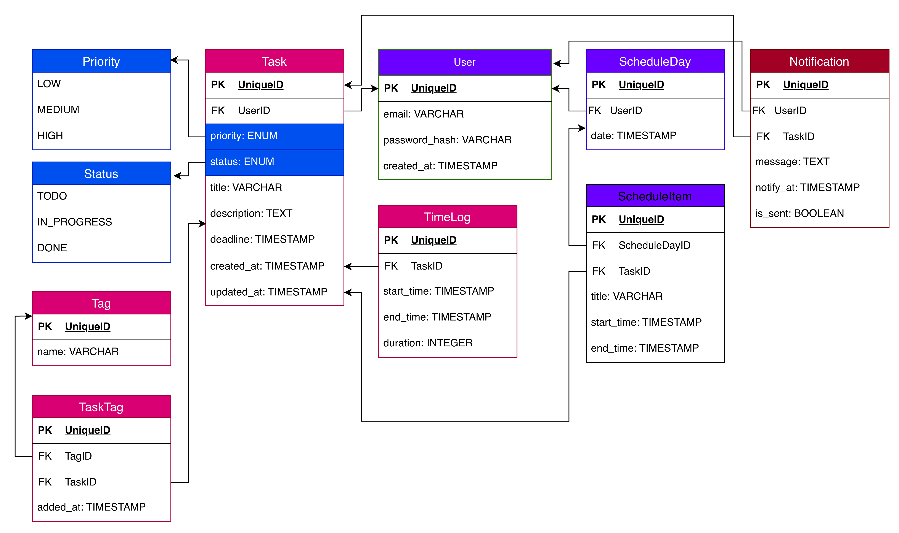

Entities
Сущности¶
Для начала были выделены основные сущности и составлена примерная ER-диаграмма:

Далее была настроена структура проекта, импортированы необходимые библиотеки и созданы файлы моделей:
user.py¶
Файл юзера это сущность пользователя, которая имеет несколько классов под разные эндпоинты:
- UserBase(SQLModel) - основные поля, от этого класса будут наследоваться остальные;
- UserCreate(UserBase) - для ручки POST, остальные поля берет из суперкласса;
- UserUpdate(SQLModel) - для ручки PATCH, где все поля необязательные;
- UserLogin(SQLModel) - для логина;
- PasswordChange(SQLModel) - для смены пароля;
- Token(SQLModel) - отдельный класс токена для JWT аутентификации;
- User(UserBase, TimestampMixin, table=True) - для ОРМ;
- UserPublic(UserBase) - краткая версия для отправки в ответке АПИ;
- UserWithTasks(UserPublic) - Для вывода с вложенными сущностями.
Такая идея разделения по классам была взята, вдохновившись этим проектом.
from datetime import datetime
from typing import Optional, List
from pydantic import EmailStr
from sqlmodel import SQLModel, Field, Relationship
from db.models.mixins import TimestampMixin
from typing import TYPE_CHECKING
if TYPE_CHECKING:
from db.models.notification import Notification
from db.models.schedule import ScheduleDay
from db.models.tag import Tag
from db.models.task import Task
# base class
class UserBase(SQLModel):
name: str
email: EmailStr = Field(unique=True, index=True)
# takes fields from superclass
class UserCreate(UserBase):
password: str
# all fields are optional for correct update
class UserUpdate(SQLModel):
email: Optional[EmailStr] = None
name: Optional[str] = None
password: Optional[str] = None
class UserLogin(SQLModel):
email: EmailStr
password: str
class PasswordChange(SQLModel):
current_password: str
new_password: str
class Token(SQLModel):
access_token: str
token_type: str = "bearer"
# for ORM
class User(UserBase, TimestampMixin, table=True):
id: Optional[int] = Field(default=None, primary_key=True)
is_active: bool = Field(default=True)
hashed_password: str
# relations
tasks: List["Task"] = Relationship(
back_populates="user", sa_relationship_kwargs={"cascade": "all, delete"}
)
notifications: List["Notification"] = Relationship(
back_populates="user", sa_relationship_kwargs={"cascade": "all, delete"}
)
schedule_days: List["ScheduleDay"] = Relationship(
back_populates="user", sa_relationship_kwargs={"cascade": "all, delete"}
)
# for API response
class UserPublic(UserBase):
id: int
created_at: datetime
# for inner entities
class UserWithTasks(UserPublic):
tasks: List["Task"] = []
По такой же логике сощданы классы и для остальных сущнойстей:
timelog.py¶
from datetime import datetime
from typing import Optional
from sqlmodel import SQLModel, Field, Relationship
from typing import TYPE_CHECKING
if TYPE_CHECKING:
from db.models.task import Task
class TimeLogBase(SQLModel):
start_time: datetime
end_time: Optional[datetime] = None
duration: Optional[int] = None # in minutes
class TimeLogCreate(TimeLogBase):
task_id: int
class TimeLogUpdate(SQLModel):
start_time: Optional[datetime] = None
end_time: Optional[datetime] = None
duration: Optional[int] = None
class TimeLog(TimeLogBase, table=True):
id: Optional[int] = Field(default=None, primary_key=True)
task_id: int = Field(foreign_key="task.id")
task: Optional[Task] = Relationship(back_populates="time_logs")
class TimeLogPublic(TimeLogBase):
id: int
task_id: int
task.py¶
from datetime import datetime
from enum import Enum
from typing import Optional, List
from sqlmodel import SQLModel, Field, Relationship
from db.models.mixins import TimestampMixin
from db.models.tag import TaskTag
from typing import TYPE_CHECKING
if TYPE_CHECKING:
from db.models.notification import Notification
from db.models.schedule import ScheduleItem
from db.models.tag import Tag
from db.models.timelog import TimeLog
from db.models.user import User
class Priority(Enum):
LOW = "low"
MEDIUM = "medium"
HIGH = "high"
class Status(Enum):
TODO = "todo"
IN_PROGRESS = "in_progress"
DONE = "done"
# base class
class TaskBase(SQLModel):
title: str
description: Optional[str] = None
priority: Priority = Field(default=Priority.LOW)
status: Status = Status.TODO
deadline: Optional[datetime] = None
# takes fields from superclass
class TaskCreate(TaskBase):
user_id: Optional[int] = None
# all fields are optional for correct update
class TaskUpdate(SQLModel):
title: Optional[str] = None
description: Optional[str] = None
priority: Optional[Priority] = None
status: Optional[Status] = None
deadline: Optional[datetime] = None
# for ORM
class Task(TaskBase, TimestampMixin, table=True):
id: Optional[int] = Field(default=None, primary_key=True)
user_id: Optional[int] = Field(default=None, foreign_key="user.id")
user: Optional[User] = Relationship(back_populates="tasks")
# relationships
time_logs: List["TimeLog"] = Relationship(
back_populates="task", sa_relationship_kwargs={"cascade": "all, delete"}
)
notifications: List["Notification"] = Relationship(
back_populates="task", sa_relationship_kwargs={"cascade": "all, delete"}
)
schedule_items: List["ScheduleItem"] = Relationship(
back_populates="task", sa_relationship_kwargs={"cascade": "all, delete"}
)
tags: List["Tag"] = Relationship(back_populates="tasks", link_model=TaskTag)
# for API response
class TaskPublic(TaskBase):
id: int
user_id: Optional[int] = None
created_at: datetime
# for inner entities
class TaskFull(TaskPublic):
time_logs: List["TimeLog"] = []
tags: List["Tag"] = []
tag.py¶
from datetime import datetime, timezone
from typing import Optional, List
from sqlmodel import SQLModel, Field, Relationship
from typing import TYPE_CHECKING
if TYPE_CHECKING:
from db.models.task import Task
class TaskTag(SQLModel, table=True):
task_id: Optional[int] = Field(
default=None, foreign_key="task.id", primary_key=True
)
tag_id: Optional[int] = Field(default=None, foreign_key="tag.id", primary_key=True)
added_at: datetime = Field(default_factory=lambda: datetime.now(timezone.utc))
class TaskTagCreate(SQLModel):
task_id: int
tag_id: int
class TaskTagUpdate(SQLModel):
added_at: Optional[datetime] = None
class TaskTagPublic(SQLModel):
task_id: int
tag_id: int
added_at: datetime
class TagBase(SQLModel):
name: str
class TagCreate(TagBase):
pass
class TagUpdate(SQLModel):
name: Optional[str] = None
class Tag(TagBase, table=True):
id: Optional[int] = Field(default=None, primary_key=True)
tasks: List["Task"] = Relationship(back_populates="tags", link_model=TaskTag)
class TagPublic(TagBase):
id: int
schedule.py¶
from datetime import datetime, timezone
from typing import Optional, List
from sqlmodel import SQLModel, Field, Relationship
from db.models.mixins import TimestampMixin
from typing import TYPE_CHECKING
if TYPE_CHECKING:
from db.models.task import Task
from db.models.user import User
class ScheduleDayBase(SQLModel):
date: datetime = Field(default_factory=lambda: datetime.now(timezone.utc))
class ScheduleDayCreate(ScheduleDayBase):
user_id: Optional[int] = None
class ScheduleDayUpdate(ScheduleDayBase):
date: Optional[datetime] = None
class ScheduleDay(ScheduleDayBase, TimestampMixin, table=True):
id: Optional[int] = Field(default=None, primary_key=True)
user_id: Optional[int] = Field(default=None, foreign_key="user.id")
user: Optional[User] = Relationship(back_populates="schedule_days")
schedule_items: List["ScheduleItem"] = Relationship(
back_populates="schedule_day", sa_relationship_kwargs={"cascade": "all, delete"}
)
class ScheduleDayPublic(ScheduleDayBase):
id: int
user_id: Optional[int] = None
date: Optional[datetime] = None
class ScheduleItemBase(SQLModel):
title: str
start_time: Optional[datetime] = Field(default_factory=lambda: datetime.now(timezone.utc))
end_time: Optional[datetime] = None
class ScheduleItemCreate(ScheduleItemBase):
schedule_day_id: Optional[int] = None
task_id: Optional[int] = None
class ScheduleItemUpdate(SQLModel):
title: Optional[str] = None
start_time: Optional[datetime] = None
end_time: Optional[datetime] = None
class ScheduleItem(ScheduleItemBase, table=True):
id: Optional[int] = Field(default=None, primary_key=True)
schedule_day_id: Optional[int] = Field(default=None, foreign_key="scheduleday.id")
schedule_day: Optional[ScheduleDay] = Relationship(back_populates="schedule_items")
task_id: Optional[int] = Field(default=None, foreign_key="task.id")
task: Optional["Task"] = Relationship(back_populates="schedule_items")
class ScheduleItemPublic(ScheduleItemBase):
id: int
schedule_day_id: Optional[int] = None
task_id: Optional[int] = None
notification.py¶
from datetime import datetime, timezone
from typing import Optional
from sqlmodel import SQLModel, Field, Relationship
from typing import TYPE_CHECKING
if TYPE_CHECKING:
from db.models.task import Task
from db.models.user import User
class NotificationBase(SQLModel):
message: str
notify_at: datetime = Field(default_factory=lambda: datetime.now(timezone.utc))
is_sent: bool = False
class NotificationCreate(NotificationBase):
user_id: Optional[int] = None
task_id: Optional[int] = None
class NotificationUpdate(SQLModel):
message: Optional[str] = None
notify_at: Optional[datetime] = None
is_sent: Optional[bool] = None
class Notification(NotificationBase, table=True):
id: Optional[int] = Field(default=None, primary_key=True)
user_id: Optional[int] = Field(default=None, foreign_key="user.id")
user: Optional["User"] = Relationship(back_populates="notifications")
task_id: Optional[int] = Field(default=None, foreign_key="task.id")
task: Optional["Task"] = Relationship(back_populates="notifications")
class NotificationPublic(NotificationBase):
id: int
user_id: Optional[int] = None
task_id: Optional[int] = None
notify_at: datetime
Также в целях соблюдения принципа DRY для полей updated_at и created_at был создан файл, где прописано присвоенине времени этим полям.
mixins.py¶
from datetime import datetime, timezone
from sqlalchemy import DateTime
from sqlalchemy.sql import func
from sqlmodel import SQLModel, Field
class TimestampMixin(SQLModel):
created_at: datetime = Field(
default_factory=lambda: datetime.now(timezone.utc),
sa_type=DateTime(timezone=True),
sa_column_kwargs={"server_default": func.now(), "nullable": False},
)
updated_at: datetime = Field(
default_factory=lambda: datetime.now(timezone.utc),
sa_type=DateTime(timezone=True),
sa_column_kwargs={
"server_default": func.now(),
"onupdate": func.now(),
"nullable": False,
},
)